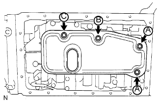

ЖГУТ ЭЛЕКТРОПРОВОДКИ ТРАНСМИССИИ > УСТАНОВКА |
| 1. УСТАНОВИТЕ ЖГУТ ЭЛЕКТРОПРОВОДКИ ТРАНСМИССИИ |
Покройте новое кольцевое уплотнение трансмиссионной жидкостью и установите его на жгут электропроводки трансмиссии.
Установите жгут электропроводки трансмиссии на картер и закрепите стопорную пластину болтом.
| 2. ПОДСОЕДИНИТЕ ЖГУТ ЭЛЕКТРОПРОВОДКИ ТРАНСМИССИИ |
Подсоедините 4 разъема к 4 электромагнитным клапанам переключения передач.
| *a | Белый |
| *b | Черный |
| *c | Оранжевый/зеленый |
| *d | Желтый/коричневый |
Подсоедините датчик температуры с помощью зажима датчика температуры и болта.
| 3. УСТАНОВИТЕ СЕТЧАТЫЙ МАСЛЯНЫЙ ФИЛЬТР КОРПУСА КЛАПАНОВ В СБОРЕ |
 |
Установите 3 новые прокладки.
|  |
Установите сетчатый масляный фильтр и закрепите его 4 болтами.
| 4. УСТАНОВИТЕ МАСЛЯНЫЙ ПОДДОН АВТОМАТИЧЕСКОЙ ТРАНСМИССИИ В СБОРЕ |
Установите 3 магнита в места, показанные на рисунке.
| *1 | Магнит |
 |
Нанесите герметик на масляный поддон, как показано на рисунке.
Установите масляный поддон и закрепите его 19 болтами.
| 5. УСТАНОВИТЕ ПАТРУБОК МАСЛОНАЛИВНОЙ ГОРЛОВИНЫ ТРАНСМИССИИ В СБОРЕ |
 |
Покройте новое кольцевое уплотнение слоем трансмиссионной жидкости и установите его на патрубок маслоналивной горловины.
Закрепите патрубок маслоналивной горловины на трансмиссии с помощью 2 болтов.
Установите щуп проверки уровня масла.
| 6. ДОБАВЬТЕ ЖИДКОСТЬ ДЛЯ АВТОМАТИЧЕСКОЙ ТРАНСМИССИИ |
| 7. ПРОВЕРЬТЕ ЖИДКОСТЬ ДЛЯ АВТОМАТИЧЕСКОЙ ТРАНСМИССИИ |
Проверьте жидкость для автоматической трансмиссии (Нажмите здесь).